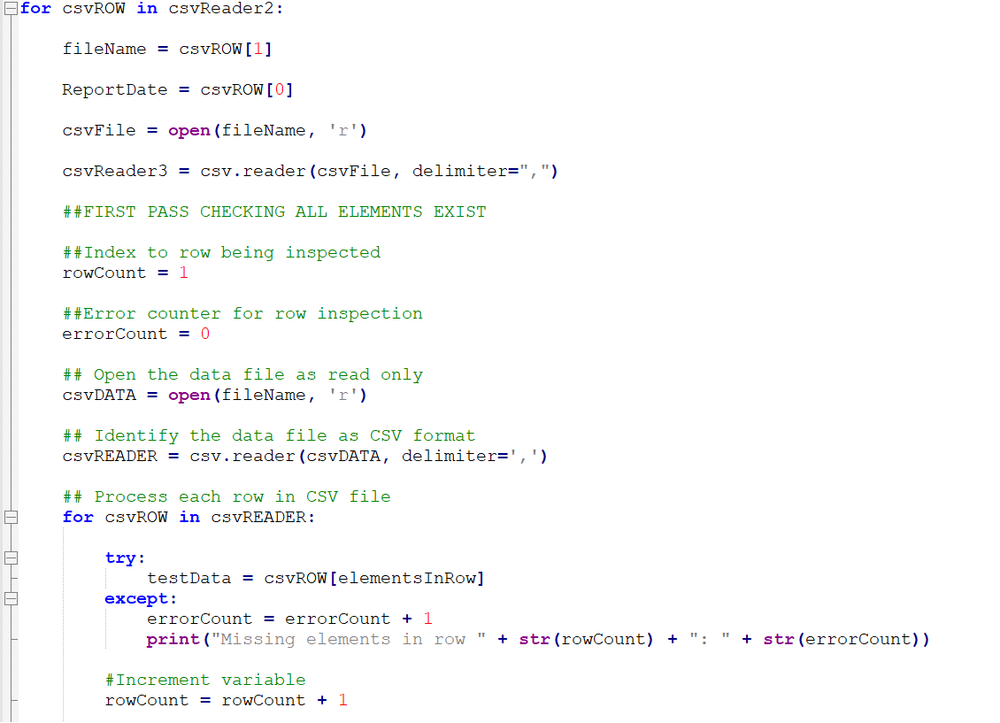

| Data Collection |
Problem: Universally accepted source for Covid-19 data is Johns Hopkins github site that produces a daily csv file with a format that is continuously varying and less than perfect adherence to file format guidelines
Requires user to download each day's csv file and process with a Python program that
performs multiple editing passes,
ensures required data elements exist,
transforms data to a consistent scheme.
File list lists file name and reporting date: authors of
data were not able to keep date in sync with reporting date
Run label uses random number function to identify
records by the run during which they were inserted
used for recovery when loading many files
The central data-loading operation is accomplished with
nested loops
First pass: check all elements exist
try/except error-catching notifies user how
many elements are missing in each row
Second pass: load data
Each column is error-checked. Character columns
are stripped. Numeric columns with errors are substituted with a
zero value. FloatTest function used to check float values.
SQL INSERT statement used to insert all columns
into table
SQL SELECT/GROUP BY statement used to print record
counts and hash totals
Uses array destructuring
Hash totals: report date, counties reporting, total
confirmed cases, total deaths, total recovered, total active
Datetime.now() gives times for beginning and end of run
